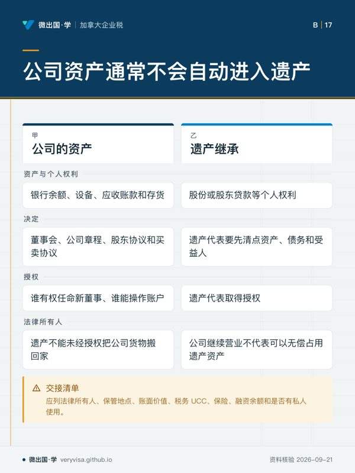
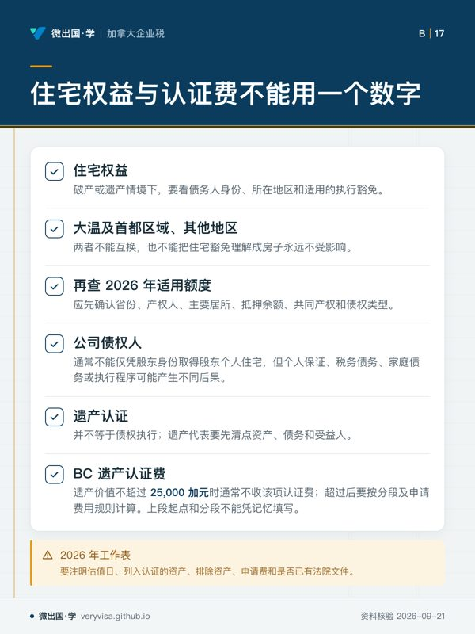
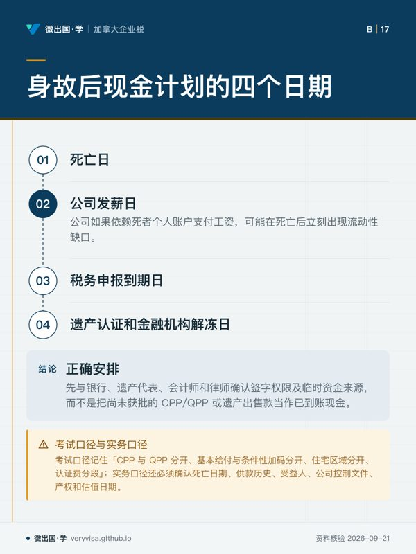

核实日期：2026-09-10｜本页口径：2026 税年公司经营者身故、遗产管理与企业连续经营的事实分流。CPP/QPP 给付、家庭住宅权益和遗产认证费属于不同制度；下一次复核：2027-01-31。
一个家庭企业的创始人身故，家人最先问的往往是“公司能不能继续开”。税务和遗产管理却不会只看公司账户余额。要先区分四个主体：死者个人、遗产、公司和受益人；再区分四类现金：公司经营现金、死者个人资产、遗产待分配资产、政府死亡给付。把给付直接当成遗产，把公司资产直接当成家庭遗产，都会让继承和申报同时失真。
一、先确认死亡给付是哪一种
CPP 的基本死亡福利与条件性加码不是一个数字。本站核实 2026 年基本死亡福利为 2,500 加元，但领取人和供款条件仍要满足；这几条所指的额外或条件性给付，须另按供款记录和申请人身份核实，不能把“最高”当作每个案件实际拿到的总额。公司秘书或家属应保存死者的 SIN、供款记录、死亡证明、婚姻或同居证明、子女资料和申请回执。
QPP 也不能直接套用 CPP 的新规则。这一条提醒，2026 年 QPP 死亡福利最高额和资格路径要按魁省制度判断；加拿大 CPP 的新增 top-up 不会自动翻倍成为魁省 QPP 给付。死者曾在多个省工作时，要先确认供款归属和申请机构，再判断是否有协调规则。工作底稿应将 CPP、QPP、雇主团体保险、公司人寿保险和个人保单分栏，记录付款人、受益人、是否进入遗产和税务申报位置。
⚠️
“死亡福利就是遗产现金”
给付能否进入遗产，取决于计划规则、指定受益人和省继承法。即使金额相同，直接付给指定受益人与付给遗产的流程也可能不同。先确认受益人和合同，再安排企业现金流，不要用预估给付支付工资或税款。
二、公司股东身故与公司资产分离
公司拥有的银行余额、设备、应收账款和存货通常属于公司，不会因为唯一股东身故就自动进入遗产。遗产继承的是股份或股东贷款等个人权利，董事会、公司章程、股东协议和买卖协议决定企业如何继续。若死者同时是董事和签字人，家属要先确认谁有权任命新董事、谁能操作账户、哪些付款必须等遗产代表取得授权。
死者个人拥有并租给公司的物业、车辆或工具，则要另行核对租赁、市场租金、股东贷款和资本成本。公司继续营业不代表可以无偿占用遗产资产；遗产也不能未经授权把公司货物搬回家。交接清单应列法律所有人、保管地点、账面价值、税务 UCC、保险、融资余额和是否有私人使用。
三、住宅权益不是一个全国统一数字
经营者家庭常把自住房当作“企业安全垫”，但破产或遗产情境下，住宅权益要看债务人身份、所在地区和适用的执行豁免。这一条针对大温及首都区域的自住房权益，针对其他地区；两者不能互换，也不能把住宅豁免理解成房子永远不受影响。应先确认省份、产权人、主要居所、抵押余额、共同产权和债权类型，再查 2026 年适用额度。
这一区分对企业主尤其重要：公司债权人通常不能仅凭股东身份取得股东个人住宅，但个人保证、税务债务、家庭债务或执行程序可能产生不同后果。相反，遗产认证并不等于债权执行；遗产代表要先清点资产、债务和受益人，再决定是否出售住宅、买断共同产权或继续持有。任何转移给配偶或成年子女的安排，都要留下法律文件和评估依据。
四、遗产认证费怎样进入现金计划
BC 遗产认证费是管理流程中的一笔成本，不是把遗产总值直接乘最高费率。本站核实，遗产价值不超过 25,000 加元时通常不收该项认证费；超过后要按分段及申请费用规则计算。这一条进一步强调，上段起点和分段不能凭记忆填写。2026 年工作表要注明估值日、列入认证的资产、排除资产、申请费和是否已有法院文件。
企业主身故后的现金计划至少要放入四个日期：死亡日、公司发薪日、税务申报到期日、遗产认证和金融机构解冻日。公司如果依赖死者个人账户支付工资，可能在死亡后立刻出现流动性缺口。正确安排是先与银行、遗产代表、会计师和律师确认签字权限及临时资金来源，而不是把尚未获批的 CPP/QPP 或遗产出售款当作已到账现金。
五、一个完整交接案例
B 是 BC 公司唯一股东，在公司经营账户留有现金，个人名下有大温住宅，并在魁省早年工作过。B 身故后，家属同时申请 CPP 与 QPP，打算用死亡福利支付员工工资，并准备出售住宅来补税。第一步应按 核对两种计划的资格、基本额与条件性加码；第二步把公司现金、股份、股东贷款和住宅拆开；第三步依 判断所在地的住宅权益规则；第四步依 估算认证费和资产是否需认证；第五步才安排公司融资、薪资和清算。
如果 B 留下买卖协议，遗产可能按协议把股份卖给关键员工或其他股东；如果没有协议，遗产代表可能只能先处理股份而不能直接接管日常经营。保险赔款的受益人、公司借款担保、税务欠款和员工工资又是独立清单。每一个结论都要有文件支持：死亡证明、公司注册记录、章程、股东协议、银行 statement、保单、住宅产权和评估报告。
交接时还应建立“谁可以作什么”的权限表：谁能签工资、谁能批准新借款、谁能出售库存、谁能向 CRA 提交文件、谁能代表遗产接受款项。临时代理人只能在授权范围内行动，不能因为掌握网银密码就取得所有权。密码、钥匙和设备应转交并留痕，旧的自动付款则逐笔复核。这样做既保护遗产，也保护继续营业的公司不因一次未经授权的付款而产生新的董事责任或税务争议。
税务年度也要单列。死亡日可能把个人申报、遗产申报和公司正常 T2 年度切成不同期间；公司不能因为股东死亡就跳过正常的工资、GST/HST 或 T2 记录。遗产代表应把死亡日前后的股东贷款、分红、工资和费用分开，注明批准人和付款日。若公司需要向遗产购买股份或资产，要留存协议、估值、付款来源和董事批准，避免把一笔未经说明的转账误写成分红或遗产分配。
还要向员工和供应商说明临时联系人，但不要公开超过必要范围的个人资料。通知应只确认公司仍在营业、发票和工资交给谁处理，以及付款账户是否改变；死亡原因、家庭安排和受益人信息不属于普通供应商需要知道的内容。谨慎的沟通能维持信用，也能避免家属在遗产尚未授权时被迫承诺公司债务。
六、考试口径与实务口径
考试口径记住“CPP 与 QPP 分开、基本给付与条件性加码分开、住宅区域分开、认证费分段”。实务口径还必须确认死亡日期、供款历史、受益人、公司控制文件、产权和估值日期。2026 年金额只是当前核实快照，下一年度不能沿用；当规则或官方申请表更新时，应先更新证据和工作表，再更新页面中的数字。
本页知识卡
不看正文也能拿到这一节的核心内容：先看导读，再看图。点图放大，左右翻页。
- 先看先看 QPP 那格，避免把另一套制度直接套过来。
- 易漏指定受益人与付给遗产的流程也可能不同，金额相同也不代表路径相同。
- 下一步去练习，拿一宗案例先判付款人，再判申请路径。

- 先看先看资产那一行，这里最能防止把两种所有权混在一起。
- 易漏死者个人出租给公司的物业、车辆或工具，另行核对租赁等安排。
- 下一步去练习，逐项判断谁持有、谁能操作、谁要先取得授权。

- 先看先看认证费那格，别把管理成本当成一档统一费率。
- 易漏转移给配偶或成年子女的安排，还要留下法律文件和评估依据。
- 下一步去练习，把住宅权益和认证费用分成两道判断。

- 先看先沿日期顺序看资金何时可能卡住，再看结论条。
- 易漏本页金额只是当前核实快照，下一年度不能沿用。
- 下一步去练习，把发薪、申报和解冻节点放进同一条时间线。